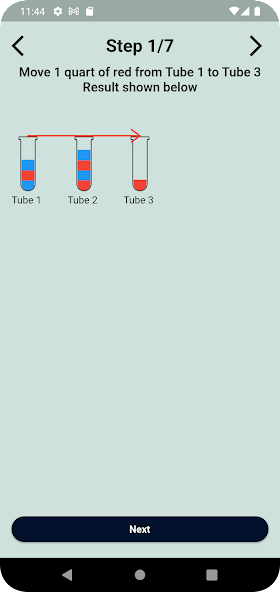
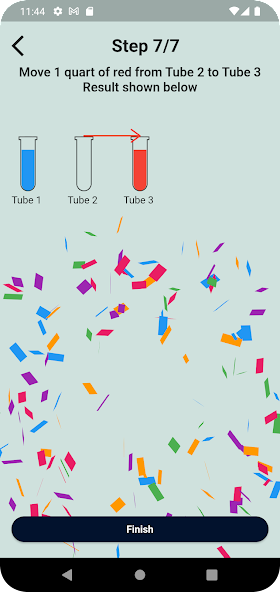
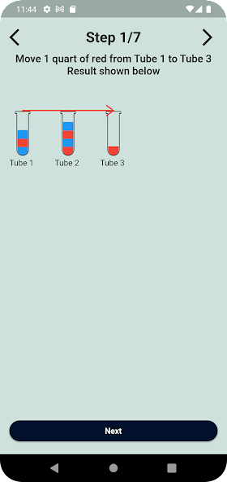
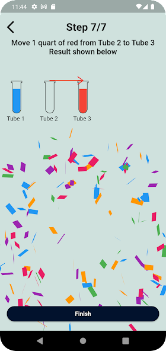

Amazon OpenSearch is an open-source search and analytics service that helps users analyze and visualize large volumes of data in real-time. As a member of the OpenSearch Contributor Initiative, I collaborated with data engineers from around the globe to develop Machine Learning algorithms and integrations in Java.
Java Programming
Git
Machine Learning
Physics Directed Reading Program
During Fall 2023, I was part of the UC Berkeley Physics Directed Reading Program. In this program, I was paired with a graduate student in physics and together we studied the intersection of Physics and Machine Learning. At the end of the semester, I gave a persentation on how Physics and Machine Learning motivate each other to UC Berkeley undergraduate and graduate students in physics.
Statistical Modeling
Monte Carlo Simulations
Machine Learning
Research-Engine
While working on a research project for one of my high school classes, I realized I was spending a large amount of time gathering information from various websites and papers to gain a comprehensive understanding of the subject matter. In reseponse, two friends and I set out to create Research-Engine: a website that uses the power of web scraping and natural language processing to provide an overview of a topic. Research-Engine offers users a streamlined solution by providing an overview of the desired topic, along with relevant papers and carefully curated summaries of associated websites.
Large Language Models
Machine Learning
Python Programming
AWS EC2
Svelte
Full-Stack Web Development
Watersort Solver
In the pursuit of solving a particularly challenging watersort brainteaser, I developed an algorithm in Java to solve any watersort puzzle. Later, I leveraged my experience with app development using Flutter to create a mobile application on the Google Play Store. Watersort Solver allows users to interactively set up any imaginable watersort puzzle and see a step by step solution.
 


